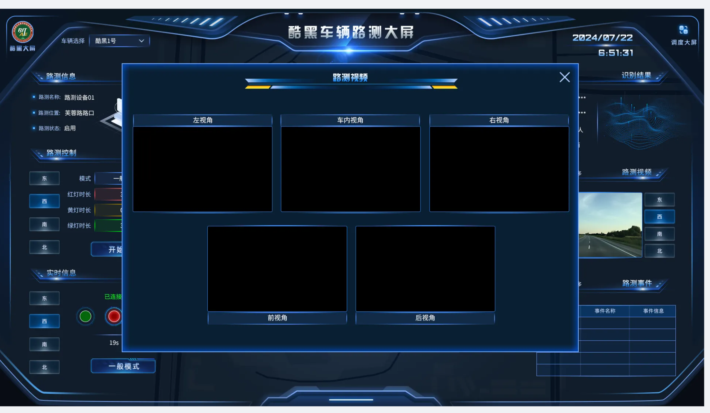
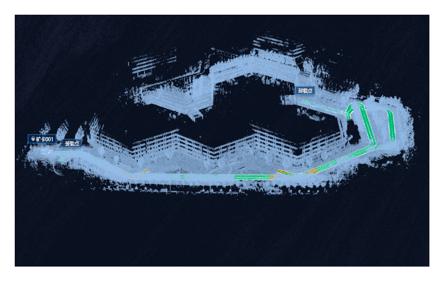

车辆调度
围绕单辆车组织实时状态、控制动作、任务管理、视频视角、位置和运行事件。
实时云控 / 车辆与路侧协同平台
在同一套云控界面中，组织车辆、路侧设备、地图、视频、控制与事件之间的实时关系。

这是一套面向车辆与路侧设备协同管理的实时云控平台。用户需要在同一界面中查看对象位置、运行状态、视频、控制动作与事件反馈。
车辆与路侧设备承载的信息不同，但都需要保持清晰的当前对象和操作上下文。高密度数据、地图、视频与控制同时出现时，界面需要避免对象混淆和信息拥挤。
车辆调度、路侧设备、视频与点云地图，共同构成实时云控的核心工作界面。

车辆调度和路侧设备控制承载不同信息，但都围绕当前对象持续推进。业务框架来自项目需求，我负责把它转化为可理解、可操作的界面结构。
围绕单辆车组织实时状态、控制动作、任务管理、视频视角、位置和运行事件。
围绕当前路口组织设备状态、信号灯配置、实时灯色、识别结果、路侧视频和事件。
原型阶段先确定中央地图和两侧功能区的职责，让车辆与路侧两套大屏能够沿用相同阅读顺序，同时容纳各自不同的控制任务。

承载车辆或路侧设备的基本信息、控制动作与任务入口。
地图负责保持当前对象、其他对象和信号灯之间的空间上下文。
持续呈现实时状态、视频和事件，让操作结果可被观察。
车辆大屏强调车辆状态、任务和远程控制；路侧大屏把相同结构切换为信号灯、识别结果与路侧设备反馈。

用户从车辆切换到路侧设备后，不需要重新理解整套界面。地图仍负责位置关系，左侧仍负责对象和控制，右侧仍负责实时反馈。
整体业务框架来自需求；以下两项是我在设计过程中主动向产品经理提出并落实的功能与布局优化。
多辆车同时显示时，用户不应在名称、位置、详情和视频之间反复核对。选择动作需要建立一个持续一致的当前对象。
主界面只保留单路预览与视角切换；需要完整观察时再打开五路视频弹窗，关闭后返回当前车辆上下文。

通过项目部提供的点云扫描地图，我调整点云的颜色、亮度与层次，将处理后的视觉应用到高保真 UI，并向工程师交付样式参数、检查开发效果。

接收真实场景点云数据。
调整颜色、亮度与空间层次。
验证与界面信息的对比关系。
向工程师交付可执行样式参数。
检查旋转、缩放与细节显示效果。
在紧凑团队中，我负责原型、两套大屏、高保真、切图、三维资产、点云视觉与开发检查，并持续向产品经理提出功能和布局建议。
在 5 人协作团队中，我作为唯一设计师承接产品需求，负责从原型、两套云控大屏到高保真与开发交付的完整设计链路；业务需求由项目经理兼产品经理统筹，我在设计过程中持续提出功能与布局优化建议。
完成设计交付后，我持续检查界面还原与点云地图效果，并与前端协作调整实现细节，最终完成高保真、视觉参数及研发验收交付。
大屏设计的关键，不是堆叠更多数据，而是让车辆、设备、状态、空间与控制形成清晰、可操作的关系。